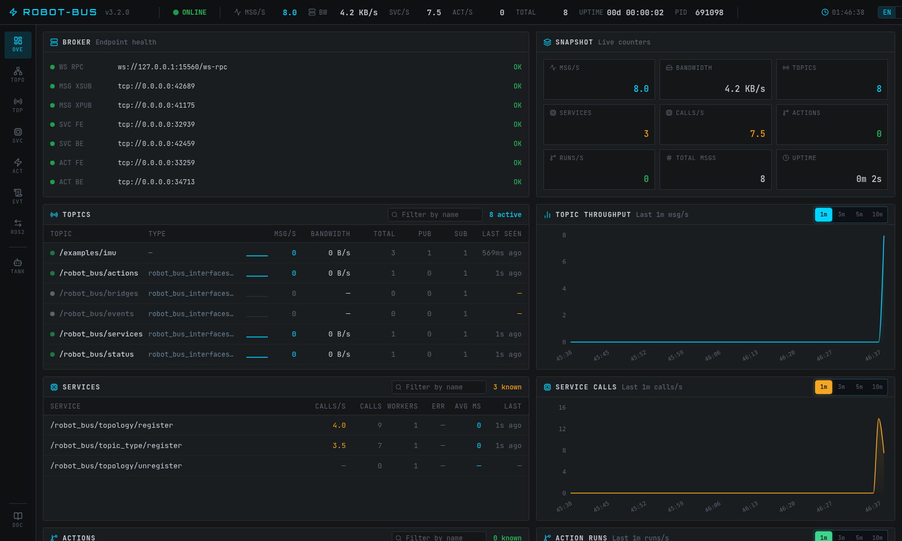

Topics
Stream sensor readings, state updates, and other data to any number of subscribers.
/robot1/imu
Open-source robotics middleware
A lightweight messaging framework for robot applications. Use ROS 2–style topics, services, and actions across six SDKs, with ZeroMQ and an optional ROS 2 bridge.
Messaging model
Build around a familiar Node API and choose the right messaging pattern for each part of your system.
Stream sensor readings, state updates, and other data to any number of subscribers.
/robot1/imu
Request a discrete operation and receive a typed response, such as toggling a device.
/set_bool
Send a goal for long-running work, monitor progress, and retrieve a result or cancel the goal.
/fibonacci
Get started
A Rust controller, Python tooling, or a TypeScript browser app can all connect to the same broker. Start with a package and follow its SDK guide.
Run the Python quickstartpip install robot-bus[dependencies]
robot-bus = "3.2.0"npm install robot-bussudo apt install ./robot-bus_3.2.0_linux_amd64.deb<dependency>
<groupId>org.indunet</groupId>
<artifactId>robot-bus</artifactId>
<version>3.2.0</version>
</dependency>implementation("org.indunet:robot-bus-android:3.2.0")Embedded web console
The broker serves its own console. Open it in a browser to inspect traffic and see how nodes connect.
Browse topics, services, actions, and their connections.
Drive with the keyboard or send a goal from the map.

Documentation